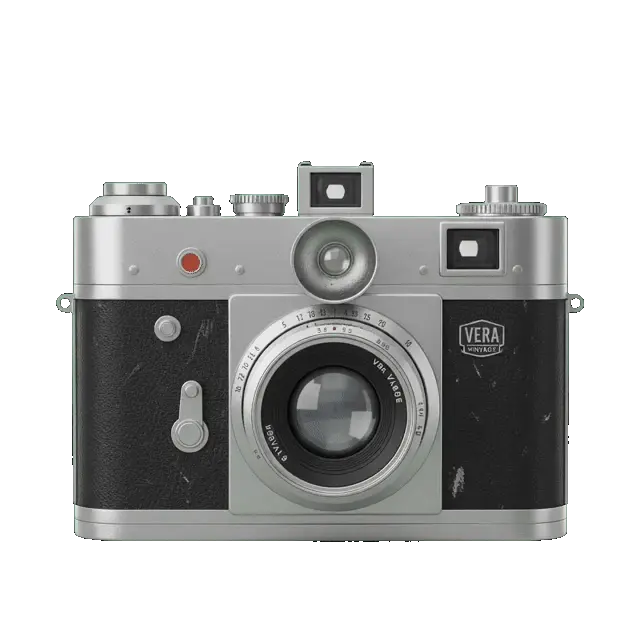

Where every moment
at SOKCHO HIGH SCHOOL
becomes a memory.

STEP 1
프레임과 색을 고르면 바로 촬영이 시작돼요.
아이패드·아이폰에서는 한 번 탭해야 카메라가 시작돼요
브라우저에서 카메라 권한을 허용해주세요.
STEP 3
누른 순서대로 프레임에 들어가요 · 0 / 4
STEP 4
휴대폰 카메라로 QR을 비추면 사진이 열려요.사진을 꾹 눌러 저장하세요.